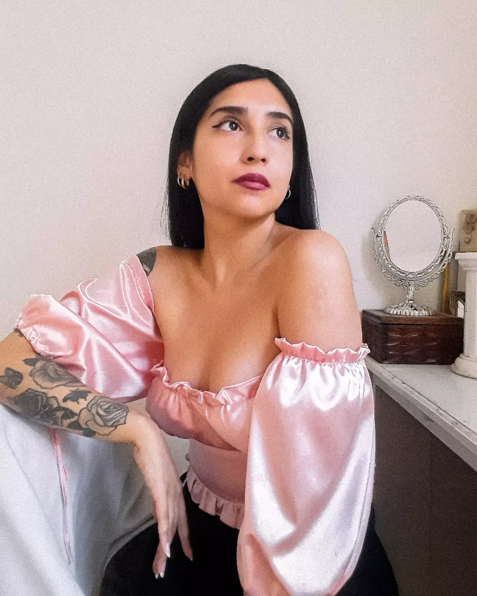
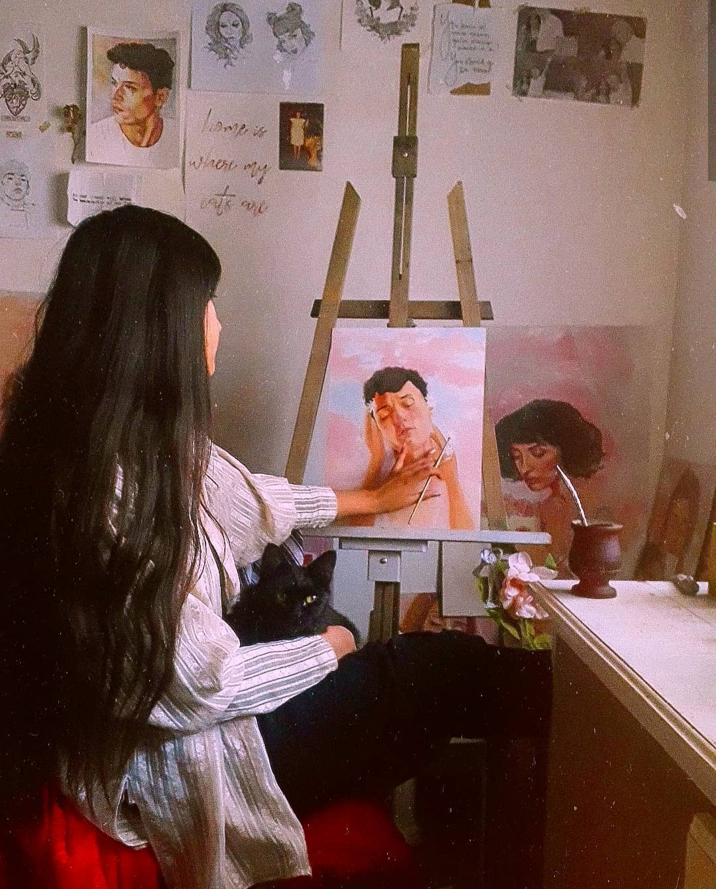
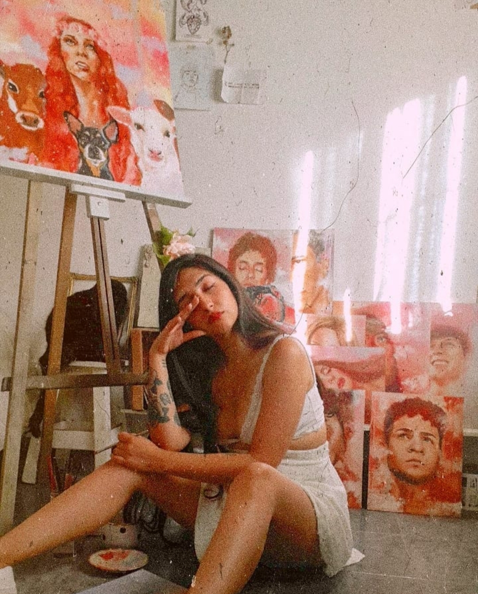
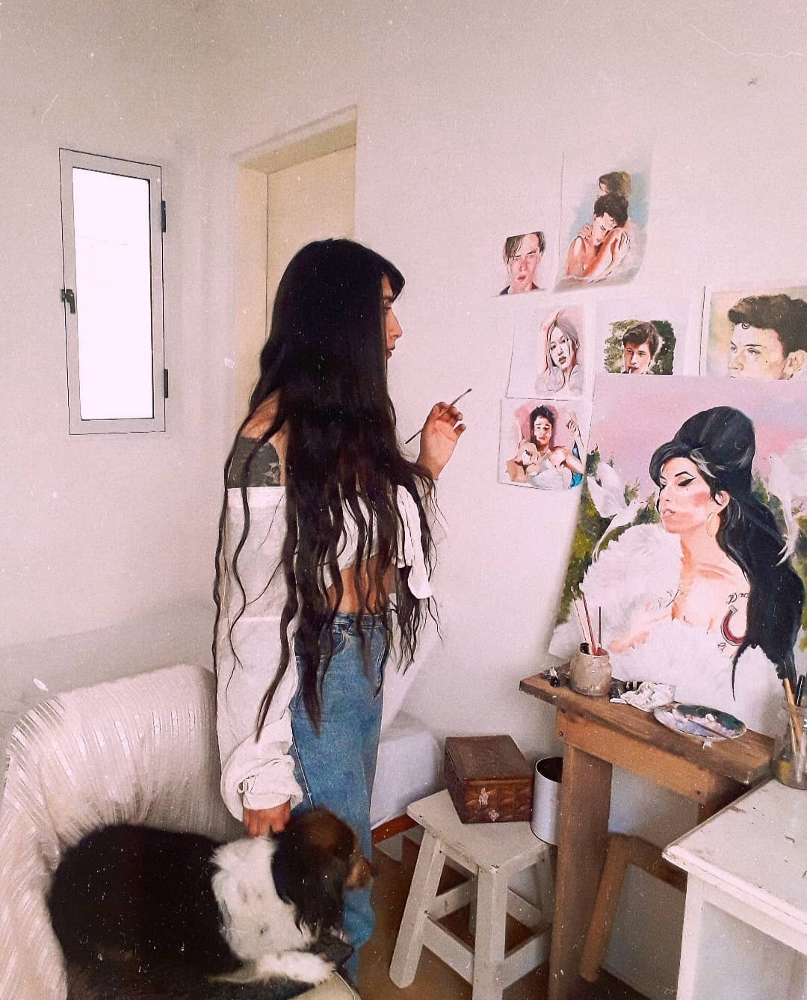
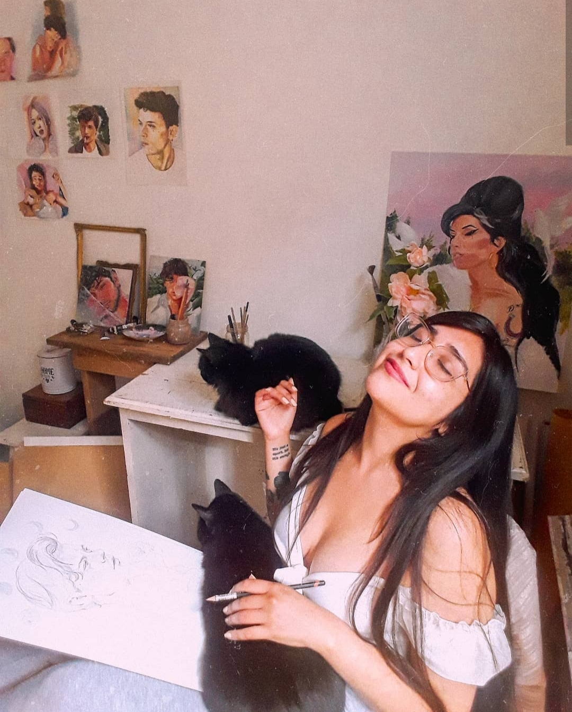

¡Bienvenidos! Mi nombre es Mayra, soy de la provincia de Buenos
Aires, Argentina, y me dedico a pintar como profesión desde el 2019.
Toda mi infancia he sido fan de dibujar y pintar. Durante la adolescencia
tuve un distanciamiento de las actividades relacionadas al arte, pero consumir
el trabajo de otros artistas en redes sociales me incentivó a volver a
dibujar, y a los 25 años comencé a pensar en el dibujo como un trabajo.


En 2018 me animé a publicar los dibujos que hacía en mi perfil
personal de instagram y empecé a hacerlo de manera recurrente.
En 2019 llegaron los primeros pedidos personalizados y en 2020,
mientras atravesábamos la pandemia, la pintura se convirtió en mi
fuente de trabajo principal.
En 2021 por primera vez participé de un evento pintando en vivo un
retrato en homenaje a Braian Toledo. Ese mismo año tuve mi primera
oportunidad de exponer mis obras personales en el centro cultural
de mi ciudad y meses más tarde fui invitada a una exposición con
otros artistas en una feria de arte.


Las artistas que más me inspiran a la hora de pintar son Lemon Zhao y
Jimena Reno. Aunque nunca estudié formalmente y se me considera
autodidacta, siento que gran parte de lo que sé lo aprendí al mirar
las obras de artistas como ellas.
Dejo aquí mi invitación para que conozcan mi trabajo y sigan
apoyando a pequeños artistas. ¡Gracias!